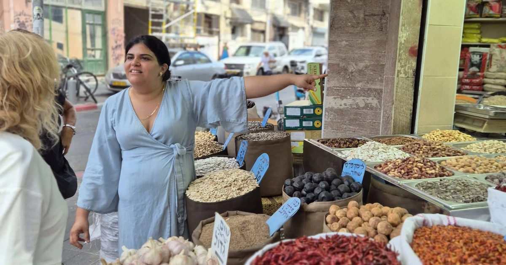

מסמטת אלוף בצלות לדרך המשי בשוק לוינסקי
מאת ענבל הנסב ·
בסמטת אלוף בצלות בתל אביב אני מוזגת את האפריטיף הראשון של הסיור. הוא מבוסס על צמחי מרפא ותבלינים, ולצדו אני מגישה חליטה. לפני שיוצאים אל החנויות אני מציעה לעצור לרגע, להריח ולטעום. אחר כך קל יותר לשים לב לריחות ולצבעים שמחכים לנו בין הדוכנים של שוק לוינסקי.

למה דווקא דרך המשי?
דרך המשי נותנת לי דרך לספר על הקשר בין המטבח הפרסי שממנו באה המשפחה שלי, האיורוודה שלמדתי והטעמים שפוגשים בשוק בתל אביב. אפשר להתחיל מתבלין אחד ולשאול איפה גדל, איך הגיע למטבחים שונים ולמה בכל בית משתמשים בו קצת אחרת. משם נפתחת שיחה גם על הקהילות שעיצבו את השוק ועל הטעמים שאנשים הביאו איתם כשעברו למקום חדש.
מה קורה כשעוצרים ליד דוכן
אנחנו עוברים בין חנויות התבלינים והדוכנים, עוצרים בכמה תחנות וטועמים. כשיש לפנינו תבלין שלם ואותו תבלין טחון, אפשר להשוות את הריח שלהם. משם אפשר לדבר על מה שעושים איתו בפועל: מתי מוסיפים אותו לסיר, מה משתלב איתו, ואיך אותו חומר גלם מקבל אופי אחר במנה או בחליטה. הידע מאיורוודה ומרפואה פרסית מסורתית נכנס לשיחה דרך החומרים שבידיים שלנו.

עוד עצירה בדרך, לפי הקבוצה
כשאני מתכננת סיור פרטי, אני שואלת מה הייתם רוצים לטעום ואיזה קצב מתאים לכם. אפשר להוסיף עצירה לטעימת גבינות וזיתים במעדנייה, בורקסים ממאפייה ותיקה בשוק, או ישיבה בבית קפה כדי להמשיך את השיחה בנחת עם כוס שתייה. אפשר גם להרחיב את כיבוד הפתיחה, למשל בחלווה הודית, במטבלים או באגוזים.
את העצירות והטעימות הנוספות מתאמים מראש לפי העונה, זמינות המקומות וצורכי הקבוצה. הן מתומחרות בנפרד, ואפשר לברר מראש התאמות לכשרות ולרגישויות מזון. לתכנון סיור פרטי עם ענבל בוואטסאפ
איפה כדאי להמשיך אחרי הסיור?
לפני שנפרדים אני שואלת מה מתחשק לכם עכשיו. אם אתם רעבים, אוכל להמליץ על מקומות לשבת לארוחת צהריים לפי הטעם וההעדפות שלכם. אם אתם רוצים עוד סיבוב קצר, אפשר לחזור למעדנייה או לחנות תבלינים שמשכה אתכם בדרך. לסיור פרטי אפשר לתאם מראש גם ארוחת צהריים כשרה לקבוצה, בתשלום נפרד, עם תפריט וכשרות שסוגרים לפני הביקור.
מה לוקחים הביתה
כל משתתף מקבל ערכה קטנה של צמחי מרפא ותבלינים כדי להמשיך להתנסות בבית. אפשר לבחור תבלין אחד ולנסות אותו במנה שכבר מכירים. ואם אתם מתכננים לחזור לקניות, ריכזתי במדריך התבלינים לשוק לוינסקי שאלות שכדאי לשאול בחנות ורעיונות לשימוש במה שקניתם.